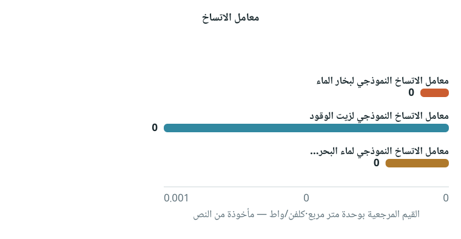

معامل الاتساخ
Fouling Factor
مقاومة حرارية تُضاف إلى سلسلة المقاومات في المبادل لتمثّل طبقة راسبة على سطح التبادل، وتُشتق من فرق المعامل الكلي بين الحالة النظيفة والمتسخة، فتُنزل الأداء مع بقاء المدخلات ثابتة.
معامل الاتساخ مقاومة حرارية واحدة تُدرج في سلسلة المقاومات الحرارية للمبادل لتمثّل ما يترسّب على سطح التبادل من أملاح أو جزيئات أو نواتج تآكل أو أغشية حيوية. يُشتق عمليًّا من فرق المعامل الكلي: يُقاس المعامل في الحالة النظيفة ثم في الحالة المتسخة، ويكون الفرق في مقلوبيهما هو المقاومة المضافة، ولذلك لا يُحسب من سماكة الطبقة ولا من موصلية المادة الراسبة، بل من أثرها الحراري المقيس. ووحدته متر مربع كلفن لكل واط، وهو مقدار صغير جدًّا بالمقارنة بمقلوب معاملات الحمل، فقيمة 0.0002 تعادل مقاومة طبقة ماء بسماكة عشر المليمتر تقريبًا. ويُستعمل هذا المعامل في التصميم بوصفه احتياطًا: يُحسب المعامل الكلي النظيف ثم يُعاد حسابه بعد إضافة المقاومة، فتُختار مساحة أكبر تعوّض الفقد المتوقع على مدى عمر التشغيل. وأهم ما يجب التنبيه إليه أن القيم المجدولة في المراجع قيم إرشادية لأوساط شائعة، لا قياسًا لموقع بعينه، وأن استعمالها بلا معرفة بالمائع الفعلي وظروفه قد يبالغ في المساحة أو يقلّلها.
كيف تعمل الظاهرة؟
الطبقة الراسبة تعمل مقاومةً حرارية موضوعة على التوالي مع مقاومة الجدار ومقاومتي الحمل على جانبيه، لأن الحرارة يجب أن تعبر مادتها قبل أن تصل إلى المعدن. ولأن موصلية معظم الراسب (أملاح، أغشية حيوية، نواتج تآكل) أقل بكثير من موصلية المعدن، فإن سماكة صغيرة تكفي لمقاومة معتبرة. وتنمو الطبقة من الصفر ثم يتباطأ نموها كلما زادت سماكتها، لأن سطحها الخارجي يصبح أقل حرارة وأبطأ في استقبال مزيد من الراسب، حتى تقترب من قيمة مقاربة تتوازن عندها قوى الالتصاق مع قوى القص من الجريان. ولهذا فإن أثر الاتساخ يظهر أولًا في الحمل المنتقل لا في درجة حرارة المدخلات، لأن المدخلات تبقى كما هي بينما تقل الحرارة المنقولة.
العلاقة بالأرقام
الصيغة R_f = 1/U_d − 1/U بوحدة متر مربع·كلفن/واط، ويُعاد ترتيبها U_d = 1/(R_f + 1/U). والقيم المجدولة تتراوح بين 0.00009 لبخار الماء وماء البحر البارد و0.0009 لزيت الوقود، أي بفارق عشرة أضعاف بين أوساط مختلفة. وفي مثال المبادل ذي المعامل النظيف 1200، يعطي هبوط المعامل إلى 1000 مقاومة 0.000167، وهي تعادل مقاومة طبقة ماء بسماكة عشر المليمتر تقريبًا عند موصلية 0.6 واط/(متر·كلفن). ويُقاس الأثر أيضًا بنسبة المساحة الإضافية اللازمة لتعويض الفقد، وهي هنا نحو 20%.
مفاهيم متقاربة
يُفصل معامل الاتساخ عن ثلاث كميات تُخلط به كثيرًا. الأولى موصلية الطبقة الراسبة، وهي خاصية مادة بوحدة واط/(متر·كلفن) ولا تحمل سماكة. الثانية معامل الحمل في الحالة النظيفة، وهو يُقاس من ارتباطات الحمل ويصف المائع لا الراسب. الثالثة مقاومة الانسداد الهيدروليكي، وهي تُقاس بفرق الضغط ولا تُقاس بالحرارة، وقد يرتفع فرق الضغط في مبادل دون تغيّر معتبر في المعامل الكلي إذا كان الانسداد في مسار جانبي. ولذلك تُقرأ الثلاثة من ثلاثة مؤشرات مختلفة، ويُوجَّه كل إجراء صيانة إلى مؤشره.
حدود التطبيق
الحد الأول أن القيم المجدولة إرشادية لأوساط شائعة، وقد صُرّح في المصدر أن المقاومة المتزايدة بسبب الراسب لا تُستخرج عادة إلا من الاختبارات أو الخبرة، فاستعمالها في موقع لم يُقس فيه الراسب الفعلي تقدير لا قياس. والحد الثاني أن المعامل يفترض طبقة موزّعة بانتظام على السطح كله، فإن ترسّب الراسب في جزء من الأنابيب فقط كان الأثر أعقد من مقاومة واحدة موزّعة، ويُقاس ذلك بتوزيع درجات الحرارة لا برقم واحد. والحد الثالث أن المعامل لا يصف التآكل ولا الانسداد، وقد تبقى السلامة مهددة أو ينخفض التدفق مع بقاء المعامل مقبولًا.

| الكمية | القيمة | المصدر |
|---|---|---|
| معامل الاتساخ النموذجي لبخار الماء | 0.00009 متر مربع·كلفن/واط | [1] |
| معامل الاتساخ النموذجي لزيت الوقود | 0.0009 متر مربع·كلفن/واط | [1] |
| معامل الاتساخ النموذجي لماء البحر فوق 325 كلفن | 0.0002 متر مربع·كلفن/واط | [1] |
| المعامل الكلي النظيف في مثال الحساب | 1200 واط/(متر مربع·كلفن) | [3] |
المصادر
- 1 Heat Exchangers — Fouling and Reduced Heat Transfer — The Engineering ToolBox (2018). www.engineeringtoolbox.com/fouling-heat-transfer-d_1661.html · اطُّلع عليه 2026-11-28
- 2 Overall Heat Transfer Coefficient: Definitions, Values & Applications — The Engineering ToolBox (2018). www.engineeringtoolbox.com/overall-heat-transfer-coefficient-d_434.html · اطُّلع عليه 2026-11-28
- 3 Heat Exchangers — Overall Heat Transfer Coefficients — The Engineering ToolBox (2018). www.engineeringtoolbox.com/heat-transfer-coefficients-exchangers-d_450.html · اطُّلع عليه 2026-11-28
استشهد بهذا المصطلح
الصيغتان مبنيتان من بيانات الصفحة نفسها: العنوان والتاريخ ورابط النسخة المنشورة.
معامل الاتساخ — Fouling Factor. (2026). ديوان المعرفة — انفراد. https://infiradev.com/diwan/terms/term-fouling-factor.html
@misc{term-fouling-factor2026,
title = {معامل الاتساخ},
titleaddon = {Fouling Factor},
howpublished = {{ديوان المعرفة — انفراد} — مرجع علمي عربي},
year = {2026},
url = {https://infiradev.com/diwan/terms/term-fouling-factor.html},
urldate = {2026-11-28},
note = {مراجعة علمية: Abdullah Al-Huwaidi}
}
راجعه: Abdullah Al-Huwaidi · 2026-11-28 · آخر تحديث 2026-11-28